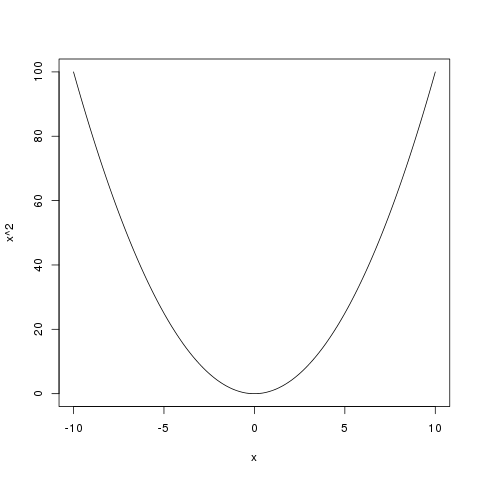

Rcpp
Table of Contents
1 A few words about C++
- C++ is a statically typed, free-form, multi-paradigm, compiled, general-purpose programming language (Wikipedia).
- Developed by Bjarne Stroustrup at Bell Labs, starting in late 1970's as a sort of generalization of the C language (hence, the name).
- C++ today is a "federation of four languages" (Eddelbuettel).
- Compiled rather than interpreted (like C, Fortran, etc.)
- OOP ("marries data with code")
- Generic programming (Standard Template Library)
- Template programming
- Many recent developments: http://herbsutter.com/2012/04/12/talk-online-not-your-fathers-c-panel/
- Compiled language: like having an instructor peering over your shoulder!
2 A few words about Rcpp
2.1 Introduction by the primary author
http://dirk.eddelbuettel.com/code/rcpp.html
In brief:
The Rcpp package provides C++ classes that greatly facilitate interfacing C or C++ code in R packages using the .Call() interface provided by R.
Most of this presentation consists of examples from class notes from a class given by Dirk Eddelbuetel and Romain Francois.
2.2 Caveat
Rcpp is a moving target, and much of the documentation that is "in the wild" does not represent the current state of the software.
2.3 Why use Rcpp?
- It is often faster than native R
- It expands the scope of libraries and tools available to R
3 Some examples
3.1 A first example: speed
## cf http://dirk.eddelbuettel.com/blog/2010/09/07#straight_curly_or_compiled ## Xian's code, using <- for assignments and passing x down f <- function(n, x=1) for (i in 1:n) x=1/(1+x) g <- function(n, x=1) for (i in 1:n) x=(1/(1+x)) h <- function(n, x=1) for (i in 1:n) x=(1+x)^(-1) j <- function(n, x=1) for (i in 1:n) x={1/{1+x}} k <- function(n, x=1) for (i in 1:n) x=1/{1+x} ## R 2.13.0 brings this toy library(compiler) lf <- cmpfun(f) lg <- cmpfun(g) lh <- cmpfun(h) lj <- cmpfun(j) lk <- cmpfun(k) ## now load some tools library(rbenchmark) N <- 1e6 ## now with Rcpp and C++ library(inline) ## and define our version in C++ src <- 'int n = as<int>(ns); double x = as<double>(xs); for (int i=0; i<n; i++) x=1/(1+x); return wrap(x); ' l <- cxxfunction(signature(ns="integer", xs="numeric"), body=src, plugin="Rcpp") ## now run the benchmark print(benchmark(f(N,1), g(N,1), h(N,1), j(N,1), k(N,1), l(N,1), lf(N,1), lg(N,1), lh(N,1), lj(N,1), lk(N,1), columns=c("test", "replications", "elapsed", "relative"), order="relative", replications=10))
test replications elapsed relative 6 l(N, 1) 10 0.115 1.00000 8 lg(N, 1) 10 3.494 30.38261 10 lj(N, 1) 10 3.647 31.71304 7 lf(N, 1) 10 3.667 31.88696 11 lk(N, 1) 10 3.667 31.88696 9 lh(N, 1) 10 4.529 39.38261 5 k(N, 1) 10 14.382 125.06087 1 f(N, 1) 10 14.821 128.87826 4 j(N, 1) 10 16.281 141.57391 2 g(N, 1) 10 16.824 146.29565 3 h(N, 1) 10 21.195 184.30435
3.2 RInside: the other way around
Rcpp includes a related R package, RInside, which makes it possible to embed R in C++ applications.
3.2.1 RInside: the "hello world" example
It's complicated to include the appropriate libraries, but RInside comes with a helpful Makefile. On my system it is located in:
/usr/lib64/R/library/RInside/examples/standard/Makefile
We want to "tangle" the following source-code block, but we need to preserve the leading tab characters in order to keep "make" happy:
(setq org-src-preserve-indentation t)
Here's the Makefile:
## -*- mode: make; tab-width: 8; -*- ## ## Simple Makefile ## ## TODO: ## proper configure for non-Debian file locations, [ Done ] ## allow RHOME to be set for non-default R etc ## comment this out if you need a different version of R, ## and set set R_HOME accordingly as an environment variable R_HOME := $(shell R RHOME) sources := $(wildcard *.cpp) programs := $(sources:.cpp=) ## include headers and libraries for R RCPPFLAGS := $(shell $(R_HOME)/bin/R CMD config --cppflags) RLDFLAGS := $(shell $(R_HOME)/bin/R CMD config --ldflags) RBLAS := $(shell $(R_HOME)/bin/R CMD config BLAS_LIBS) RLAPACK := $(shell $(R_HOME)/bin/R CMD config LAPACK_LIBS) ## if you need to set an rpath to R itself, also uncomment #RRPATH := -Wl,-rpath,$(R_HOME)/lib ## include headers and libraries for Rcpp interface classes RCPPINCL := $(shell echo 'Rcpp:::CxxFlags()' | $(R_HOME)/bin/R --vanilla --slave) RCPPLIBS := $(shell echo 'Rcpp:::LdFlags()' | $(R_HOME)/bin/R --vanilla --slave) ## include headers and libraries for RInside embedding classes RINSIDEINCL := $(shell echo 'RInside:::CxxFlags()' | $(R_HOME)/bin/R --vanilla --slave) RINSIDELIBS := $(shell echo 'RInside:::LdFlags()' | $(R_HOME)/bin/R --vanilla --slave) ## compiler etc settings used in default make rules CXX := $(shell $(R_HOME)/bin/R CMD config CXX) CPPFLAGS := -Wall $(shell $(R_HOME)/bin/R CMD config CPPFLAGS) CXXFLAGS := $(RCPPFLAGS) $(RCPPINCL) $(RINSIDEINCL) $(shell $(R_HOME)/bin/R CMD config CXXFLAGS) LDLIBS := $(RLDFLAGS) $(RRPATH) $(RBLAS) $(RLAPACK) $(RCPPLIBS) $(RINSIDELIBS) all: $(programs) @test -x /usr/bin/strip && strip $^ run: $(programs) @for p in $(programs); do echo; echo "Running $$p:"; ./$$p; done clean: rm -vf $(programs) rm -vrf *.dSYM runAll: for p in $(programs); do echo "Running $$p"; ./$$p; done
Here's the C++ code for the "hello world" program:
#include <RInside.h> // embedded R via RInside int main(int argc, char *argv[]) { RInside R(argc, argv); // create embedded R inst. R["txt"] = "Hello, world!\n"; // assign to 'txt' in R R.parseEvalQ("cat(txt)"); // eval string, ignore result exit(0); }
make -f Makefile.demo ./RI-hw
3.2.2 RInside: use of R graphics in C++
Starting R at: [1] "2012-06-04 16:32:41 PDT" Could now use plot in RIgraphics.png

3.3 Product of integer vector with C++ loop
library(inline) src <- ' Rcpp::IntegerVector vec(vx); int prod = 1; for (int i=0; i<vec.size(); i++) { prod *= vec[i]; } return Rcpp::wrap(prod); ' funLoop <- cxxfunction(signature(vx="integer"), src, plugin="Rcpp") funLoop(1L:10L) ## Can also use a sort of "vectorized" approach src <- ' Rcpp::IntegerVector vec(vx); int prod = std::accumulate(vec.begin(), vec.end(), 1, std::multiplies<int>()); return Rcpp::wrap(prod); ' funVec <- cxxfunction(signature(vx="integer"), src, plugin="Rcpp") funVec(1L:10L) ## But there's not much (or any) performance advantage ###### This needs work ################################### library(rbenchmark) print(benchmark(funLoop(1L:1000L), funVec(1L:1000L), columns=c("test", "replications", "elapsed", "relative"), order=c("replications", "elapsed"), replications=10^(1:5)))
4 A peek under the hood
The RObject class is the basic class behind the new API.
It is a thin wrapper around a SEXP object. This is often called a proxy model as we do not copy the R object.
RObject manages the life cycle, the object is protected from garbage collection while in scope – so you do not have to do memory management.
– Dirk Eddelbuettel
5 Some words about constructors
5.1 Nasty example: "remember to clone"
What is the difference between the two invocations of "fun" below?
library(inline) src <- ' NumericVector x1(xs); //////////////////////////////// NumericVector x2(Rcpp::clone(xs)); IntegerVector x3(Rcpp::clone(xs)); IntegerVector x4(xs); //////////////////////////////// x1[0] = 22; x2[1] = 44; x3[2] = 66; x4[0] = 88; return(DataFrame::create(Named("orig", xs), Named("x1", x1), Named("x2", x2), Named("x3", x3), Named("x4", x4)));' fun <- cxxfunction(signature(xs="numeric"), body=src, plugin="Rcpp") fun(seq(1.0, 3.0, by=1.0)) fun(1L:3L)
orig x1 x2 x3 x4 1 22 22 1 1 88 2 2 2 44 2 2 3 3 3 3 66 3 orig x1 x2 x3 x4 1 88 22 1 1 88 2 2 2 44 2 2 3 3 3 3 66 3
In the first case, R is invoking "fun" with a vector of three real numbers. Therefore:
- x1 is type-compatible with the input, xs, and no new vector is created
- x2 and x3 are explicitly cloned, so new vectors are created for both
- x4 is not type-compatible with the input, so a new vector is created
Hence, x1 is identical with xs, and when x1 gets changed (x1[0] = 22), so does xs (aka "orig").
In the second case, R is invoking "fun" with a vector of three integers. Therefore:
- x1 is not type-compatible with the input, so a new vector is created
- x2 and x3 are cloned, as before, so both are new vectors
- x4 now is type-compatible with the input, so no new vector is created for it
Hence, x4 is now identical with xs, and when x4 gets changed (x4[0] = 88), so does xs (aka "orig")
5.2 Constructor overview
SEXP x; NumericVector y( x ); // from a SEXP
// cloning (deep copy) NumericVector z = clone<NumericVector>( y );
// of a given size (all elements set to 0.0) NumericVector y( 10 );
// … specifying the value NumericVector y( 10, 2.0 );
// … with elements generated NumericVector y( 10, ::Rfunifrand );
// with given elements NumericVector y = NumericVector::create( 1.0, 2.0 );
6 Matrices
Matrices are vectors with a dimension attribute.
6.1 Simple matrix example
Note the use of an "apply-like" C++ function here.
library(inline) src <- ' Rcpp::NumericMatrix mat = Rcpp::NumericMatrix(mx); std::transform(mat.begin(), mat.end(), mat.begin(), ::sqrt); return mat; ' fun <- cxxfunction(signature(mx="numeric"), src, plugin="Rcpp") mat <- matrix(c(1, 4, 9, 16, 25, 36, 49, 64, 81), 3, 3) fun(mat)
6.2 RcppArmadillo
"Armadillo" is an open-source linear-algebra library for C++:
The RcppArmadillo package makes it easy to use Armadillo in Rcpp.
library(inline) src <- ' arma::mat m1 = Rcpp::as<arma::mat>(mx); arma::mat m2 = m1 + m1; arma::mat m3 = m1 * 3; return Rcpp::List::create(m1, m2, m3); ' fun <- cxxfunction(signature(mx="numeric"), src, plugin="RcppArmadillo") mat <- matrix(1:9, 3, 3) mat2 <- fun(mat) print(mat2)
Note, by the way, that some people prefer the "Eigen" package for this kind of thing:
Information on package ‘RcppEigen’
Description:
Package: RcppEigen
Type: Package
Title: Rcpp integration for the Eigen templated linear
algebra library.
6.3 More fun with Armadillo: eigenvalues
library(inline) src <- ' arma::mat m1 = Rcpp::as<arma::mat>(mx); arma::vec eigval; arma::mat eigvec; eig_sym(eigval, eigvec, m1); return Rcpp::List::create(m1, eigval, eigvec); ' fun <- cxxfunction(signature(mx="numeric"), src, plugin="RcppArmadillo") mat <- matrix (rbind(c(3, 2, 4), c(2, 0, 2), c(4, 2, 3)), nrow=3, ncol=3) print(fun(mat))
[[1]]
[,1] [,2] [,3]
[1,] 3 2 4
[2,] 2 0 2
[3,] 4 2 3
[[2]]
[,1]
[1,] -1
[2,] -1
[3,] 8
[[3]]
[,1] [,2] [,3]
[1,] -0.4941014 -0.5580496 0.6666667
[2,] -0.4720189 0.8161415 0.3333333
[3,] 0.7301109 0.1499788 0.6666667
7 Many other data types in Rcpp
7.1 GenericVector (List)
We had an example above, in the discussion of eigenvalues.
7.2 DataFrame
We had an example above in the discussion of cloning.
7.3 Function
7.3.1 Example: grabbing a function from R
This example merely illustrates the use of Rcpp to link to a function in R. All we do is grab the function, apply it to some vectors created in C++, and then return the output of the function to R. We would have gotten the same result had we defined the vectors in R and invoked the same function directly in R.
But in a real use case, we would have proceede to do further calculations inside the C+ code.
library(inline) src <- ' Rcpp::Function expGrid("expand.grid"); IntegerVector v1; IntegerVector v2; v1.push_back(1); v1.push_back(3); v1.push_back(5); v2.push_back(2); v2.push_back(4); v2.push_back(6); return(expGrid(v1, v2));' fun <- cxxfunction(signature(), src, plugin="Rcpp") print(fun())
7.3.2 Example: passing functions from R to C++
Note the third invocation of "fun". In the C++ code the function is named "sort", but that name is, in effect, a dummy variable.
library(inline) src <- ' Function sort(x) ; return sort( y, Named("decreasing", true));' fun <- cxxfunction(signature(x="function", y="ANY"), src, plugin="Rcpp", verbose=FALSE) fun(sort, sample(1:5, 10, TRUE)) fun(sort, sample(LETTERS[1:5], 10, TRUE)) fun(mean, sample(1:100, 10, TRUE))
7.4 Environment
The Environment class allows us to access R environments. It provides an alternative way of accessing functions from R.
library(inline) src <- ' Rcpp::Environment stats("package:stats"); Rcpp::Function rnorm = stats["rnorm"]; return rnorm(10, Rcpp::Named("sd", 100.0)); ' fun <- cxxfunction(signature(), src, plugin="Rcpp") fun()
7.5 S4 classes
S4 classes can also be created or altered at the C++ level. Example omitted.
8 Creating a package with Rcpp
R provides a function, package.skeleton(), to help create R
packages.
Eddelbuettel/Francois have wrapped and extended this function to
Rcpp.package.skeleton() to help create R packages that involve Rcpp.
8.1 Making the skeleton
library(Rcpp) if (!file.exists("./UCDpackage")) { Rcpp.package.skeleton( "UCDpackage" ) }
Creating directories ... Creating DESCRIPTION ... Creating NAMESPACE ... Creating Read-and-delete-me ... Saving functions and data ... Making help files ... Done. Further steps are described in './UCDpackage/Read-and-delete-me'. Adding Rcpp settings >> added Depends: Rcpp >> added LinkingTo: Rcpp >> added useDynLib directive to NAMESPACE >> added Makevars file with Rcpp settings >> added Makevars.win file with Rcpp settings >> added example header file using Rcpp classes >> added example src file using Rcpp classes >> added example R file calling the C++ example >> added Rd file for rcpp_hello_world
8.2 A look at the file structure of the skeleton package
tree UCDpackage
UCDpackage
├── DESCRIPTION
├── man
│ ├── rcpp_hello_world.Rd
│ └── UCDpackage-package.Rd
├── NAMESPACE
├── R
│ └── rcpp_hello_world.R
├── Read-and-delete-me
└── src
├── Makevars
├── Makevars.win
├── rcpp_hello_world.cpp
├── rcpp_hello_world.h
├── rcpp_hello_world.o
└── UCDpackage.so
3 directories, 12 files
8.3 The C++ header file
cat ./UCDpackage/src/rcpp_hello_world.h
#ifndef _UCDpackage_RCPP_HELLO_WORLD_H #define _UCDpackage_RCPP_HELLO_WORLD_H #include <Rcpp.h> /* * note : RcppExport is an alias to `extern "C"` defined by Rcpp. * * It gives C calling convention to the rcpp_hello_world function so that * it can be called from .Call in R. Otherwise, the C++ compiler mangles the * name of the function and .Call can't find it. * * It is only useful to use RcppExport when the function is intended to be called * by .Call. See the thread http://thread.gmane.org/gmane.comp.lang.r.rcpp/649/focus=672 * on Rcpp-devel for a misuse of RcppExport */ RcppExport SEXP rcpp_hello_world() ; #endif
8.4 The C++ source file
cat ./UCDpackage/src/rcpp_hello_world.cpp
#include "rcpp_hello_world.h"
SEXP rcpp_hello_world(){
using namespace Rcpp ;
CharacterVector x = CharacterVector::create( "foo", "bar" ) ;
NumericVector y = NumericVector::create( 0.0, 1.0 ) ;
List z = List::create( x, y ) ;
return z ;
}
8.5 The R file
cat ./UCDpackage/R/rcpp_hello_world.R
rcpp_hello_world <- function(){
.Call( "rcpp_hello_world", PACKAGE = "UCDpackage" )
}
8.6 The DESCRIPTION file
Note the last two lines, which declare the dependency of your package on Rcpp.
cat ./UCDpackage/DESCRIPTION
Package: UCDpackage Type: Package Title: What the package does (short line) Version: 1.0 Date: 2012-06-04 Author: Who wrote it Maintainer: Who to complain to <yourfault@somewhere.net> Description: More about what it does (maybe more than one line) License: What Licence is it under ? Depends: Rcpp (>= 0.9.10) LinkingTo: Rcpp
8.7 The NAMESPACE file
The regular expression exports all symbols.
cat ./UCDpackage/NAMESPACE
useDynLib(UCDpackage)
exportPattern("^[[:alpha:]]+")
8.8 The standard Makevars file
cat ./UCDpackage/src/Makevars
## Use the R_HOME indirection to support installations of multiple R version
PKG_LIBS = `$(R_HOME)/bin/Rscript -e "Rcpp:::LdFlags()"`
## As an alternative, one can also add this code in a file 'configure'
##
## PKG_LIBS=`${R_HOME}/bin/Rscript -e "Rcpp:::LdFlags()"`
##
## sed -e "s|@PKG_LIBS@|${PKG_LIBS}|" \
## src/Makevars.in > src/Makevars
##
## which together with the following file 'src/Makevars.in'
##
## PKG_LIBS = @PKG_LIBS@
##
## can be used to create src/Makevars dynamically. This scheme is more
## powerful and can be expanded to also check for and link with other
## libraries. It should be complemented by a file 'cleanup'
##
## rm src/Makevars
##
## which removes the autogenerated file src/Makevars.
##
## Of course, autoconf can also be used to write configure files. This is
## done by a number of packages, but recommended only for more advanced users
## comfortable with autoconf and its related tools.
8.9 The Windows Makevars.win file
cat ./UCDpackage/src/Makevars.win
## Use the R_HOME indirection to support installations of multiple R version
PKG_LIBS = $(shell "${R_HOME}/bin${R_ARCH_BIN}/Rscript.exe" -e "Rcpp:::LdFlags()")
8.10 Installation
Something in my .Rprofile was causing a problem.
mv ~/.Rprofile ~/.Rprofile.save R CMD INSTALL -l ~/R/library UCDpackage mv ~/.Rprofile.save ~/.Rprofile
make: Nothing to be done for `all'.
converting help for package ‘UCDpackage’
UCDpackage-package html
rcpp_hello_world html
8.11 Use of the package
library("UCDpackage", lib.loc="~/R/library") rcpp_hello_world()
[[1]] [1] "foo" "bar" [[2]] [1] 0 1
9 Syntactic sugar
Put succinctly, the motivation of Rcpp sugar is to bring a subset of the high-level R syntax in C++.
– Dirk Eddelbuettel and Romain Francois
See the PDF document in the vignette:
> vignette("Rcpp-sugar")
9.1 A first sugar example: sapply
To use an auxiliary function with the simple "inline" approach, the function, AFAICT, has to be defined in an include file.
But, given the function, the syntax for sapply in C++ is now virtually identical to the syntax used in R. (The "wrap" function is a part of Rcpp that transforms an arbitrary object into a symbolic expression, aka, SEXP – i.e. something that R can understand.)
library(inline) includes <- ' double square( double x){ return x*x ; }' src <- 'NumericVector x(xx); return wrap(sapply( x, square ));' fun <- cxxfunction(signature(xx="numeric"), body=src, plugin="Rcpp", includes=includes) fun(c(1, 3, 5, 7, 9))
[1] 1 9 25 49 81
9.2 Sugar example with benchmark
Note that the C++ syntax is very "R-like", but that there is a significant performance advantage to using Rcpp/C++.
foo <- function(x) { ## sum of ## -- squares of negatives ## -- exponentials of positives s <- sum(ifelse( x < 0, x*x, exp(x) )) return(s) } library(inline) cppfoo <- cxxfunction(signature(xs="numeric"), plugin="Rcpp", body=' NumericVector x(xs); double s = sum( ifelse( x < 0, x*x, exp(x) )); return wrap(s); ') library(compiler) Rcmpfoo <- cmpfun(foo) library(rbenchmark) x <- rnorm(1e5) benchmark(foo(x), Rcmpfoo(x), cppfoo(x), columns=c("test", "elapsed", "relative", "user.self", "sys.self"), order="relative", replications=10)
test elapsed relative user.self sys.self
3 cppfoo(x) 0.035 1.00000 0.036 0
2 Rcmpfoo(x) 0.980 28.00000 0.959 0
1 foo(x) 1.110 31.71429 1.104 0